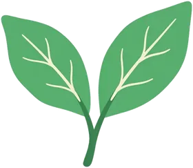
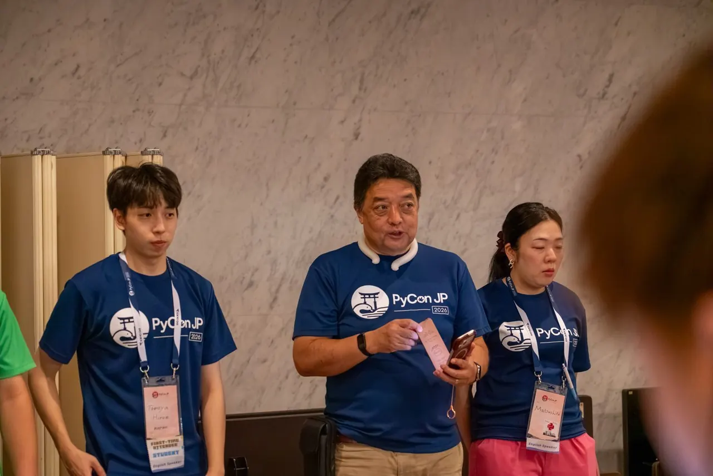
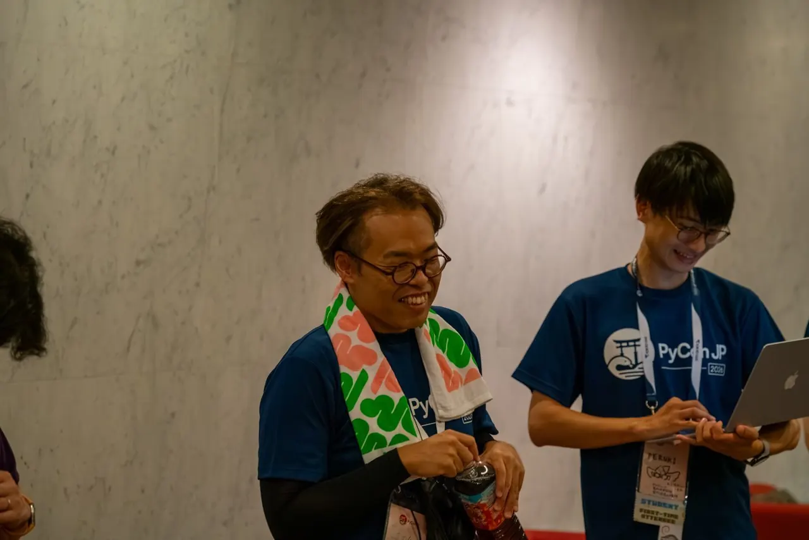
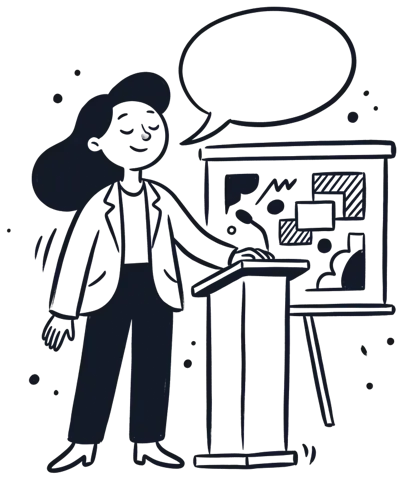
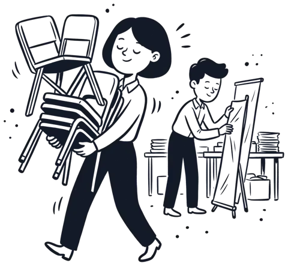
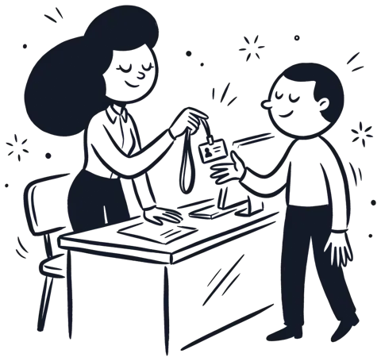
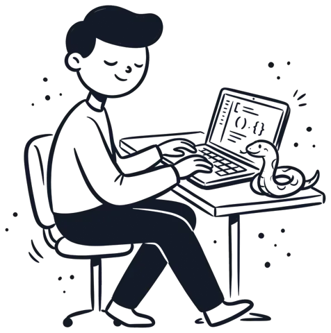
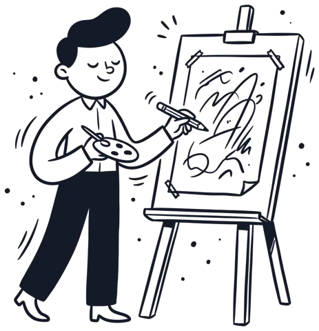
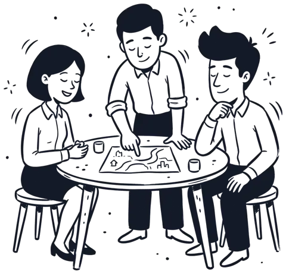

JOIN US
主催メンバー募集
PyCon JP 2027 をいっしょにつくる仲間を募集します
PyCon JP 2026 HIROSHIMA


01活動区分

コアスタッフ継続参加
企画・準備・当日運営まで
企画・準備・当日運営まで

サポートスタッフできる範囲で
タスクと時間帯を選んで
タスクと時間帯を選んで
申し込み時はサポートスタッフからスタート
02チーム

企画トークの公募やキーノートなど、イベントの中身づくり

会場レイアウトや搬入、当日の会場運営

参加者チケットや受付、アクセシビリティの支援
協賛
スポンサーの募集やブースの調整
広報
ブログの公開、SNSなどでの発信

開発Webサイトやアプリの実装

デザインロゴや掲示物のデザイン
地域連携
静岡の業者や地域団体との連携
メインを1つ選択チームは申し込み後に決定
03参加の流れ
STEP 1フォームで申し込み
STEP 2Slackに招待
STEP 3

オンボーディング04参加にあたって
主催メンバーに申し込む
運営の経験がなくても大丈夫です